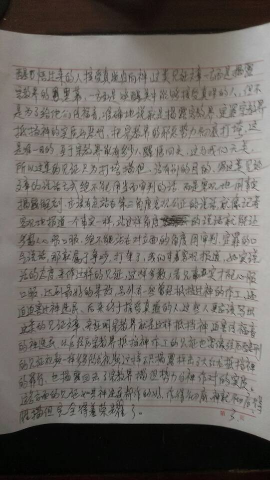
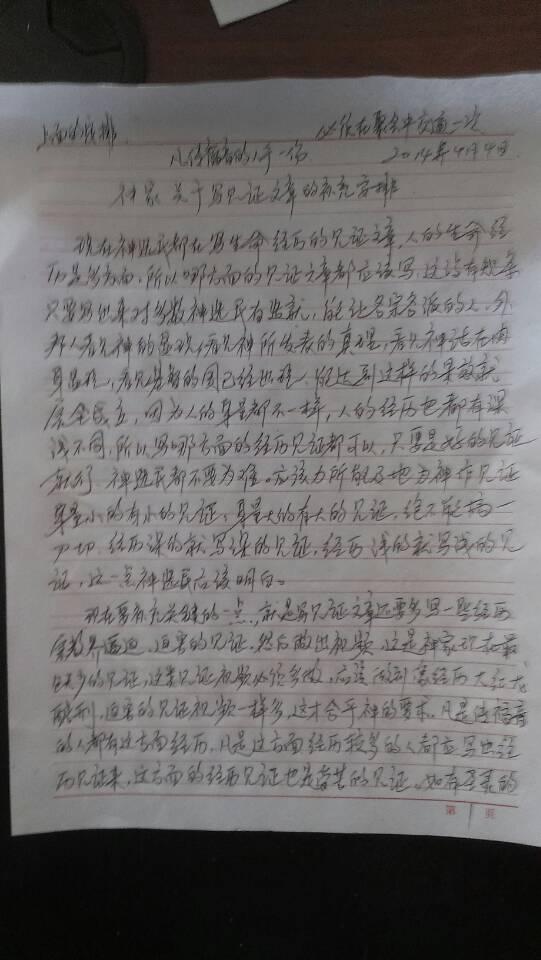
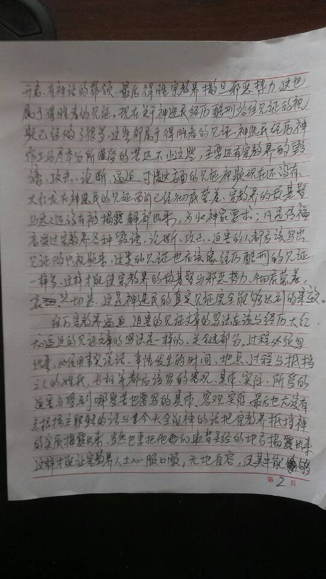
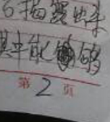
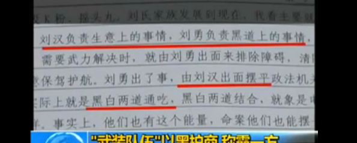
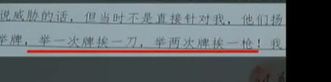

Conversation with 81184027 at Sun 20 Apr 2014 10:21:22 AM CST on 154115835 (webqq)
(04/20/2014 07:39:36 AM) 安徽-市区&钟馗: http://forum.china.com.cn/forum.php?mod=viewthread&tid=3648380&extra=page%3D1%26filter%3Dtypeid%26typeid%3D850%26typeid%3D850
(04/20/2014 07:39:36 AM) 安徽-市区&钟馗: http://forum.china.com.cn/forum.php?mod=viewthread&tid=3648380&extra=page%3D1%26filter%3Dtypeid%26typeid%3D850%26typeid%3D850
(10:46:31 AM) 光: 不要幻想用爱去改变一个人 发布时间：2012-02-16 16:08:22 编辑：psycofe-pajas 关键字： 改变一个人幻想拯救爱人夫妻相处 我要评论(0) 心理引言：在夫妻及男女关系中，是有些本质性的、不可解的矛盾的。其中之一，就是因为一 方幻想去改变另一方。但现实告诉我们：不要幻想我只要爱他/她，就能感动对方并改变他/她。不要幻想去扮演救世主的角色，去拯救情人的一生。不要幻想用爱 去感动改变另一个人的一生中那些性格本质的 ——心灵咖啡网 不要幻想用爱去改变一个人 人生的一大败笔，就是老想去该变他人或配偶。人际关系的困难，往往也是起源于此。 因为专业工作的原因，笔者同无 数人和无数对各族裔的夫妻及男女打过交道。人际和婚姻家庭中矛盾那么多，人的性格情绪行为问题那么多，这些都并不一定是在婚前或关系稳定以前没有被意识到 的。而是，当事人有幻想，认为自己今后可以靠努力或爱情来改变对方的毛病和问题。这种思维，在本质上就为今后两人关系出问题的必然性埋下了祸根。 其实，在夫妻及男女关系中，是有些本质性的、不可解的矛盾的。其中之一，就是因为一方幻想去改变另一方，从而产生的矛盾。 作为一个人，其性格、性情、行 为、思维方式、人际交流手段（包括谈话和处理关系的技巧），在早年儿童期和青少年期，就已经基本定型。那是因为大脑神经细胞的发育和各神经通道之间的连 接，是在这个年龄段上就基本完成。并且人的个性、行为方式、情感感受和表达方式等，在这个年龄段上，这些方面大致的框架结构已经成型。那么，在此之后，要 想在根本上去改变一个人，就是很可能很难做到了。 比如，一个脾气急躁的人，焦虑 的人，说话不讲究方式方法的人，冲动的人，情绪把握不好的人，情感不忠不踏实的人，冷酷的人，自私的人，好利用他人为自己利益服务的人，花心的人，玩弄他 人的人，懒惰的人，没有组织能力的人，不会安排的人，没有延缓冲动能力的人，担心害怕的人，鲁莽的人，夸夸其谈好为人师的人，永远是有远大计划但没有实际 匹配能力的人，不会与人交往的人，只顾自己讲不听他人看法的人，好高骛远的人，好欺诈的人，欺世盗名的人，没有实干精神却永远在做着伟大计划的人，如此等 等，到了成年期，其行为方式和思维方式，是不会有太大变化的。这些人，这些行为，一般不会因为进入了一段人际关系，如爱情，爱或被爱，或有虚幻的爱，或迷 幻于狂热假定的爱，就会发生本质性的变化。那是不可能的。 但是，人是可以伪装的。比如， 一个在家里好发脾气的人，在单位上可以显得客客气气，与单位上的人还过得去。但是，他可以在家里发大脾气。有的人，在外边，显得还勤快周到，可是家里她是 手指头都懒得动一下。有的人，在社会学校里显得腼腆但是在家里作威作福。其实，在社会上与人打交道，我是会对于那些四面乖巧八面玲珑、过分客气礼貌的人， 善于巧言的人，在心里上画个问号的。我是深深地了解人性的伪装部分的。 打个比方，你要是不信，你去真 实地了解一下，比如说参加晚会宴会的人，邀请的和被邀请的，翩翩君子，窈窕淑女，在那些欢颜、笑语、客气、礼貌、社交的后面，在安排准备过程中，真实发生 的是些什么（发生争吵是常事）？你就知道人性真实的一些东西了。另外，过分夸张自己长处的人，其实也是不靠谱、靠不住的人。一个人，如果有这些性格，是很 难改变的。爱情在这些根深蒂固的人格问题面前，是没有多少效力的。
(10:47:46 AM) 光: 其实，花前月下，情深意长，珠联璧合，比翼双飞，情长爱深，襟干枕湿，花好月圆，百年好合，不过是人们的希望如此罢了。不过是人们希望如此的幻想外化。不过是很大程度上在受荷尔蒙刺激下，产生的幻想和希望。 我对男女关系，一点都不悲观， 但是是定位的很现实。当你遇上一个还算心仪的人，如果没有太大的毛病，还过得去，就应该应承下来。但是，如果有吸毒酗酒，玩女人打家暴，脾气暴怒，一点就 炸，极度吝啬，胡乱吹嘘，好高骛远，不切实际，过度软弱，极度自我中心，没有能力主内，完全不能打理社会人际关系，对父母完全听命被操纵，等等，那么你就 要眼睛睁大点，仔细多考虑。因为上述这些问题，一定会在今后的家庭生活中显现出来，并有着摧毁力。 不要幻想我只要爱他/她，我就会感动对方并改变他/她。那是不可能的。因为，一个人的性格行为情绪模式的定型，是在早年的儿童和青少年期。 所以，在择偶时，如果是遇上没有太大的毛病之人，差不多就行了。都该烧高香，抱感恩之心了。只要对方还能养家顾家，也就行了。即便对方还有些毛病，只要自己能容忍，这也就还算过得去的关系了。不要希望要求太高。 当然，如果有的人在人生中有过很大的磨难，挫折，也可能对一个人的性格，部分的有所正面改变或负面扭曲。一个人也可能由此改变其人生态度，以及让人对自己在婚姻家庭关系中的角色做出新的定位。 但是，在人生中，有过大苦大难 经历的人，毕竟是少数。而且，其中的大部分又被生活打垮。心理创伤，有可能把一个人终生给击败。最后能爬起来，又再走出有些成绩的人生之路来的人，毕竟是 稀少，但是是强者和英雄。倒是历尽苦难的人，更懂得珍惜人间的情感。不过你不一定能碰上这类精华之人。 有一些负面的东西，比如乡巴佬 的质朴简单，没多少教育程度的人想问题的直线性和粗俗，城市贫民的自卑、操纵和玩弄他人，知识分子的酸劲和自命的清高、以及在权势面前的唯唯诺诺，干部官 宦人家的无知无理傲慢专横，有钱人家的自大和操纵欲，几乎都是深深的在早年就烙刻在这各自各类家庭的孩子身上。而这些东西是根深蒂固的，它是不会因为爱情 或婚姻而发生根本改变的。它可以在一定时期内加以掩饰和有一定修正，比如在谈朋友时期对短处的掩饰和对长处的过分夸张。但是，一个人的本质是不会改变的， 或迟或早，它的本性最终还是会显现出来的。 在人际特别是男女婚姻关系中， 俩人相处，一定不要幻想去改变对方的行为、性格和习惯。不要幻想去扮演救世主的角色，去拯救情人的一生。不要幻想用爱去感动改变另一个人的一生中那些性格 本质的东西。那是不太可能的。（当然不是说绝对没希望。）对于在爱情婚姻男女关系中的扮演救世主角色的问题，在心理学上有相当的研究，而结论是不太可能 的、渺茫的、和负面不看好的。 总之，如果你要问，那我该怎么办。我想说的是：是人就都有毛病，所以要宽容厚道一点。如果不能改变对方，至少可以学会容忍对方。包 容对方的一些毛病，只要不是太出格的言和行，能放人一马就放一马。我的告诫是：婚前睁大眼睛挑毛病，以决定是否进入这个关系的婚姻。婚后闭上眼睛不去想那 些毛病，就当没看见。莫生气，莫赌气。要想的是：是我自己选择的这位有这么多毛病的人，我也就认命了。如果还能够过下去，就过下去，不为对方也为了孩子。 如果觉得不能过下去了，或实在是受不了了，那么你就可以去找律师咨询，下一步该怎么办。或是去找心理辅导，分析看看我和对方，还有没有机会调节和改正，以 挽救这段婚姻。专业帮助，有可能帮助做出些调节改正，以便双方能够继续下去。如果挽救不了，要分手，也要分得君子一点。[李昶]
(11:00:46 AM) 光: 王怡蕊，澳大利亚临床心理学博士, 注册临床心理学家 万义、殷子衿、沐晨曦 等人赞同 有一个笑话说，需要几个心理学家去换一个灯泡？答案是：一个，如果这个灯泡愿意被换的话。
如果一个人不愿意被改变，你成功的可能性多数是很渺茫的。在临床心理学里，这种抵抗情绪我们叫它resistance。面对这种阻碍积极变化的情绪，最重要的态度就是不要去试图说服别人。因为只有你不试图去说服别人，别人才更有可能真正的改变。相信大家都有这种体验，你越是试图说服别人，别人就越是能找出理由来反驳你，甚至是更加坚信他原来的观点。强制改变他人很可能导致逆反甚至是敌对的情绪。（什么，你不信？那你现在是不是在找各种理由来反驳我？）
比 较好的做法是：倾听别人的想法，不随便发表自己的意见。倾听是一个很强大的“武器”，它让人感觉到你是真正的关心他，理解他，而不是试图去控制他。当你这 样做的时候，被倾听的对象会觉得没有辩论的对象，渐渐的抵触情绪也就缓和了，自己就想明白了也说不定。有了这个基础，你才有成功的机会。
如 果这样还不够，而且你有非要让他改变的理由。也许你可以试试“动机谈话”（motivational interviewing)。这种方法常用于有成瘾性问题的人，比如说烟瘾。但对于帮助别人下决心做改变也非常有效。这个方法中，比较容易操作的一个手段 是，你帮助人家做一个列表，写出改变的好处和坏处，不改变的好处和坏处。在这个过程中，你可以提问题，给建议，但千万不能试图说服人家。比如，你可以让别 人自己说出戒烟的好处有哪些（有利于健康），坏处有哪些（压力难以排解）；不戒烟的好处有哪些（不会显得不合群），坏处有哪些（牙齿难看）。你可以引导别 人说出更多的想法，“戒烟还有哪些好处/坏处？”，“你有没有想过二手烟对小孩的影响？”等等。如果别人不同意你的观点，也不要强行推销自己的意见。不然 的话，我们就又陷入了上文中所说的“辩论→抵触情绪”的怪圈。要想帮一个人做到真正的改变、持久的改变，而不是敷衍你一下，这个改变的动力必须来源于他自己。
如 果你想改变的是个有正常认知、判断能力的人，你尝试了所有能尝试的做法，但都没有达到想要的效果。也许你可以考虑下，别人是不是有权利决定自己的生活呢？ 不管你怎么努力，选择权仍然在他的手上，对不对？再退一步说，你已经种下了一颗改变的“种子”。以后，当这个人自己想改变的时候，他也知道该怎么做，知道 你还是会支持他的，这就够了。
不批判别人（non-judgmental），不把自己的价值观强加于人，尊重他人的选择，是我个人的态 度，也是心理学家的伦理道德手册（code of ethics）明确规定的。举个例子，有一个非常有经验的临床心理学家在给我们上课的时候说过，他曾经有一个吸毒成瘾的30岁左右的来访者，这个人自己并 不怎么想戒毒，但是他的女朋友威胁他说，不吸毒就跟他分手。他很在意他的女朋友，于是就参加了好几次咨询。那个心理学家用了我前文说过的方法以及一些其他 的方法，这让这个来访者觉得很有所得，想清楚了一些以前没想明白的事情，他也彻底理解了吸毒对他的人生的积极和消极的影响（没错！吸毒也有积极影响，比如 减轻压力，feeling high，融入他的朋友圈子。没有人是单纯地为了那些害处去吸毒，或者做所谓的坏事的）。后来，那个心理学家问他，如果你继续吸毒，就会失去你的女朋友， 吸毒和你的女朋友哪个对你更重要。这个人仔细的想了想说，吸毒，然后就走了。当时我们心里都在想，这个该怎么补救呢？这个心理学家后来说道，他当时也是一 愣，有些后悔这么早问出这个问题，但是他并没有追出去，试图补救。他说，这是这个人思考后作出的选择。我再追出去也不会有用的。我一直让他明白，我不是他 的敌人，不会试图说服他戒毒。我的工作只是帮助他搞明白他想过怎样的生活，帮助他达到他的目的。如果我追出去，试图让他回心转意，他还会再信任我吗？如果 我在这个时候追出去，那我之前做的努力就白费了，他只会认为我心里其实是想让他戒毒，只是嘴上说尊重他的意愿。所以，我仅仅告诉他，如果他将来回心转意就 再来找我，然后就让他离开了。
打个不恰当的比方，改变他人就像是传教。有些教派觉得，他们宣扬教义就像在人们心里播种，有些种子会成长， 有些种子不会发芽。一般来说，他们不愿过多的干涉别人的想法，更不会非要你改变你原来的想法。也有些教派会试图把自己的观点、价值观强加于人，他们也有一 系列达到这个目的的方法，很多时候，人们称他们为，“邪教”。
上述方法不仅仅适用于心理学家面对来访者，也同样适用于和家人（成人或者思想比较成熟的青少年）、朋友的相处。要想真正的帮助一个人改变，积极的态度是前提，倾听和理解是基础，开诚布公的交流是手段，耐心是必备的要素。
PS：如果你要改变的对象是个岁数较小的儿童，那么情况就不同一些。儿童的独立思考能力比较差，动力往往不能持久。所以外在动力，实实在在的好处（比如额外1小时玩电脑的时间）配合着不批判的态度，倾听的手法，效果会更好。
(11:00:56 AM) 光: http://www.zhihu.com/question/20538902
(11:22:44 AM) 光: 因为只有你不试图去说服别人，别人才更有可能真正的改变。
(11:22:52 AM) 光: 要想帮一个人做到真正的改变、持久的改变，而不是敷衍你一下，这个改变的动力必须来源于他自己。
(11:23:00 AM) 光: 上述方法不仅仅适用于心理学家面对来访者，也同样适用于和家人（成人或者思想比较成熟的青少年）、朋友的相处。要想真正的帮助一个人改变，积极的态度是前提，倾听和理解是基础，开诚布公的交流是手段，耐心是必备的要素。
(12:31:23 PM) lost message from #90034 to #90046
(12:31:23 PM) 福建-福州&水浒: 浙江苍南5民打人城管系临时工
(12:35:19 PM) 福建-福州&水浒: 尼玛的太多巧合了，城管一打人正式工就成为临时工，这都什么事！城管做个好事一经报道临时工又变成正式工，真他么会屁股贴金，天理不容！忽悠忽悠还成忽悠成“事实”了！
(12:36:30 PM) 光: 嗯
(12:37:24 PM) 福建-福州&水浒: 在中国好像没有真相，真相都包装起来了
(12:38:14 PM) 光: 嗯
(12:38:25 PM) 福建-福州&水浒: 类似的报道看多了，也就麻木了，忽悠忽悠别人也挺相信
(12:38:43 PM) 光: 极权社会
(12:38:54 PM) 福建-福州&水浒: 是的
(12:39:02 PM) 自力: 哪设置啊
(12:39:27 PM) 光: baidu 代理设置
(12:39:40 PM) 光: firefox autoproxy
(12:39:44 PM) 自力: 谷歌
(12:39:47 PM) 自力: 我没用那个
(12:39:49 PM) 自力: 太复杂了
(12:39:51 PM) 自力: 我下的个谷歌
(12:39:55 PM) 光: 一样的
(12:39:56 PM) 自力: 谷歌哪设置
(12:40:06 PM) 光: 百度 chrome 代理设置
(12:40:22 PM) 福建-福州&水浒: 光 发个简单点的翻墙软件给我吧
(12:40:29 PM) 光: 嗯
(12:40:35 PM) 光: 我只用goagent
(12:40:51 PM) 福建-福州&水浒: 你放群共享一下，今晚回去下一个
(12:40:51 PM) 光: lwg2005.com@126.com
(12:40:57 PM) 光: 应该不能放
(12:41:03 PM) 光: 我发你邮箱把
(12:41:08 PM) 福建-福州&水浒: 好的
(12:41:11 PM) 光: 嗯
(12:41:22 PM) 福建-福州&水浒: 上面那个邮箱号就可以，谢谢
(12:41:26 PM) 光: 好
(12:41:38 PM) 福建-福州&水浒: 原来的那个用起来好慢
(12:42:08 PM) 光: 已发
(12:42:14 PM) 自力: 真复杂
(12:42:17 PM) 自力: 恼火
(12:42:33 PM) 福建-福州&水浒: 嗯:)
(12:42:38 PM) 光: 嗯
(12:43:10 PM) 福建-福州&水浒: 邪教这月手抄本工作安排
(12:43:36 PM) lost message from #90083 to #90083
(12:43:35 PM) 福建-福州&水浒: 
(12:43:24 PM) 福建-福州&水浒: 
(12:44:01 PM) 自力: 吗的
(12:44:03 PM) 福建-福州&水浒: 我的字体不美观凑合看吧了解下邪教动态
(12:44:06 PM) 自力: 还是360算了
(12:44:10 PM) 自力: 360 难怪这么普及
(12:44:13 PM) 自力: 简单好用
(12:44:32 PM) 光: 嗯
(12:44:39 PM) 自力: 这才是正确的
(12:44:42 PM) 自力: 一件东西
(12:44:44 PM) 福建-福州&水浒: :d
(12:44:46 PM) 自力: 不是说你越复杂越好
(12:44:47 PM) 福建-福州&水浒: 
(12:45:28 PM) 自力: 你哪来的
(12:45:39 PM) 福建-福州&水浒: ？？
(12:45:59 PM) 自力: 这抄本
(12:46:07 PM) 福建-福州&水浒: 出自高人之手
(12:46:33 PM) 自力: 
(12:46:37 PM) 自力: 还无黑爸爸
(12:48:25 PM) 福建-福州&水浒: 反邪高手在民间啊
(12:52:00 PM) 福建-福州&水浒: 12年反大红龙，13年邪教网出见证，14年反宗教界，交代信徒写定罪见证，不知道邪教又要出什么幺蛾子！
(01:08:54 PM) 安徽-淮南&文军: 水浒从那搞到的手写的
(01:09:26 PM) 广西-柳州&小何: 高手
(02:10:06 PM) 光: 灾后心神障碍的中医开导法 中医心理治疗的开导法最早见于《灵枢·师传篇》。该篇指出：“人之情，莫不恶死而乐生，告之以其败，语之以其善，导之以其所便，开之以其所苦，虽有无道之人，恶有不听者乎。”这里包括了四点内容。 地震灾害后，伤员们不仅有很严重的躯体障碍，同时对治疗缺乏信心。所以不少患者会出现心理问题，表现出较重的情绪障碍和心态失衡。中医学历来强调“心身合一，心身并治”，其中开导法是中医心理治疗最有效的一种方法。 中医心理治疗的开导法最早见于《灵枢·师传篇》。该篇指出：“人之情，莫不恶死而乐生，告之以其败，语之以其善，导之以其所便，开之以其所苦，虽有无道之人，恶有不听者乎。”这里包括了四点内容。 告之以其败 就是告诉患者得这种伤病的危害，病情的轻重程度，疾病的病因、病理、病情发展趋势，以引起病人的高度重视。这样，才能唤起患者接受治疗、配合医生、 努力增强自身抗病能力的积极性。“病为本，工为标”，疾病的治愈，主要靠患者自身的恢复能力，医生只是帮助患者增强恢复能力。而疾病恢复的关键，取决于患 者自身正气战胜邪气的能力。 语之以其善 就是耐心地向患者讲，“积极地配合医生治疗，预后就是好的，就能够恢复健康”；并应反复强调只要积极配合治疗，发挥患者和医生两方面的积极性，就一定能战胜疾病。 导之以其便 就是要告诉患者进行调养的具体方法。比如情绪要平和、饮食要节制、起居要规律，还要避免风寒的侵袭、保证充足的睡眠。 开之以其所苦 就是要帮助患者解除心中的苦恼，消除焦虑、恐惧、抑郁等消极心理，减轻心理压力，释放出过多积聚的心理能量，保持良好的心态去战胜疾病。 完成上述四个步骤的关键，是医生要做到与患者的心理相容、照顾患者的自尊、了解患者的心理需求。医生还应急患者之所急，帮患者之所需，以建立良好的 医患关系；进而对患者进行关于心身障碍相关知识的讲解，使其提高认识水平，树立起战胜伤病的信念，并矫正不正常的行为和习惯，达到心理康复目的。(来源： 国家中医药管理局)
(02:30:20 PM) 光: 与李泽厚对话:“中国要过封建资本主义这一关” FT中文网总编辑 张力奋 字号 背景 评论 打印 电邮 收藏 微信腾讯微博新浪微博 FT中文网总编辑张力奋：上世纪八十年代中国开放初期，哲 学家李泽厚是中国思想界的一位先锋人物。他的著述，如《批判哲学的批判》，《美的历程》，《中国古代、近代、现代思想史论》曾影响了文革之后中国的知识界 和整整一代学人。九十年代初，李泽厚移居美国，淡出中国思想界，他的学问与影响力也渐被“80后”的中国遗忘。每年秋天，李泽厚依惯例回国，小住几个月。今 年12月初，北京入冬。在他的北京寓所，我与他有闲散对谈。客厅里，挂着老师冯友兰先生题赠的条幅“西学为体中学为用，刚日读史柔日读经”。记得一年前， 我曾拜访正在北京度假的李先生。当时他裹着件花纹的棉睡袍会客。今年，虚岁已八十的李泽厚，举手投足似乎更精神， 记忆力饱满。以下我略去了对话中的提问与对谈部分，集中纪录李泽厚对中国社会现况的观察。令自己自豪的事情我 是1992年1月份出去的。从93年开始，每年回国一次，还没有破过这个例。每次回国，媒体的采访邀请很多，但我能回避就回避。随便谈谈可以，但我不上电 视，那些正式的东西我不干。我觉得，这么些年，有两件事情让我感觉自豪。第一件事情，就是我的书。我二十年、三十年前出的书，现在还在卖，而且卖的不错， 到现在还有人在读。我这次回来，碰到几个80后的，他们来找我。这让我非常欣慰。二十年、三十年后，我的书没有任何炒作，没有任何宣传，有的还是经常挨骂 的，居然能够保持二十年、三十年的生命力。《批判哲学的批判》是79年出版的，《中国近代思想史论》也是79年出版的，《美的历程》81年出版。几部思想 史的书也都是80年代出的，都是二、三十年的书了。第二件事情，让我自豪的，是我61周岁出国，到了美国还要给学生上课。出国时，我英文也 不好，最怕的是，学生提问我听不懂怎么办，因为教的都是美国本地学生，居然最后被我应付下来了，我自己也感觉惊讶。有人讲，你讲课，不要太在意英文语法错 误。你就这么讲，别人能懂。美国有学生评议老师的制度。系里透露说，学生对我的评价还很不错。在美国教了七、八年书，对美国学生了解中国起了些作用，因为 我说的都是中国的事情。我教的是一个在科罗拉多的College，没有中国学生，都是美国本地学生。我居然能够教下来，而且教得还不错。这两个事情是我自 己感觉满意的。我讲完最后一堂课，学生们一起鼓掌，这在学校是很少见的。一个课堂20几个学生，都来跟我握手。每年我回国住段时间，一是美 国较寂寞。因为我不习惯主动跟人来往，就更寂寞。但回来以后又觉得太热闹，主要是调节一下。我回来也不吱声，越到后面找上门来的人越多，都传开了，有相识 的，有不认识的，大部分都是年轻人，50年代、60年代、70年代还有80年代。最年轻的一个是86年的，他读我的书，读得津津有味，来找我。回国，主要 就是跟人聊天，这是很愉快的。美国的生活比较寂寞。因为我在美国基本上什么会也不参加，我说有“三不”：不讲演、不开会、不上电视。我这七、八年，这几点 执行的很好，包括国内的会议，我也不参加。“我不是公共知识分子”我不认为我是什么公共 知识分子。我关心政治，也发表一些对政治的看法、意见，但是我不参加任何政治活动。我这人不会与人打交道。我真要搞经济可以，搞政治也可以，并不是说没有 这个能力，我对有些事情的判断还是相当准确的， 但我不愿意跟这些东西打交道，那就没办法了。不管搞政治，还是搞经济，总要有人际关系嘛，所以我讲我没有什么社会关系。我没有关系。文革中间，人家认为我 是搞美学的，一定跟文艺界有很多联系。那时，文艺界闹的最凶，被外调的很多，结果没有到我这里外调，因为我从来就不来往。钱学森来看过我，我住在和平里 时，我没去看过他。我一向是这样的，不管你是什么人，反正我很少主动去见人。我与外界不交往，某种程度上也是一种自我保护。当时，很多大人 物都看中过我，包括康生（编者注：文革期间曾任中共中央副主席。）也曾经通过我们社科院所里领导，意思是看中了我。但我不理这个茬，假装不懂，也就过去 了，不然会很麻烦。周扬（曾任中共中央宣传部副部长，中国文联主席），胡乔木（文革后曾任中央政治局常委、意识形态宣传最高主管），邓力群（文革后曾任中 央书记处书记，中共宣传部长）也都对我不错，也看中我。邓力群还特地把我找去，让我写一篇文章，我没有当场拒绝，反正我不写，不写他也没有办法。“西方真正了解中国，还要再等100年”有 篇文章说我在美国宣传儒学，我从来没有宣传儒学。我认为外国人真正要了解中国至少是50年、100年以后的事情，我是这么看的。他们了解中国，就如同看电 影孙悟空大闹天宫，图个热闹。我93年在德国的时候就讲过，西方了解中国，跟我们了解他们是不成比例的。我们找一个中国知识分子，不管是基层干部或者是其 他什么背景，让他从古到今举出20个外国人的名字， 都能说得出。我想在德国，除了搞汉学的教授，有多少人能举出20个中国人的名字？为什么？就是他们不需要了解中国。就好象我们不需要了解肯尼亚、厄瓜多尔 一样。不需要，是因为它的存在与我没关系。现在中国走向世界。我对中国经济是乐观的，当年我讲过，书上也说过，现在“中国制造”越来越多。中国的存在对世 界开始有影响，这次金融危机中也特别看得明显。因此西方慢慢开始感觉需要了解中国。但要到一般外国老百姓的层面，还早的很，他们顶多了解些经济情况，文化 上还早的很。一幅梵高的画卖多少钱，我们一幅最好的画卖多少钱，相差太远了。所以了解中国要很长的时间。在国外，《红楼梦》有几个人在看？没兴趣的。我的 书，你翻译不翻译没关系，或者说，我的书是为未来写的，未来会有外国人读。现在不会，还早。“现在是封建特色资本主义”老 实讲，我很顽固。人家问我，出国十年，看法上有什么改变，我觉得没有。以前的看法，现在还是这样。最近，有关倡导“中国模式”的文章，只是个大学生水平， 水平很差，没有什么本质的东西。文章水平差，是一回事情。但这种观点现在如果开始成为主流观点，这个问题就大了。十多年前，我写过一篇文章。是1995年 4月在广州中山大学和香港中文大学的讲演，这里面的观点跟我现在的看法，基本是一样的。现在看了，完全可以不改。在《告别革命》一书里，我把政治民主摆在 最后一个，不是不赞成民主政治。现在，中国搞一人一票，我是反对的，是不赞成的。在中国搞选举，关键是怎么个选法。每个人都应该有参政的权利，一人一票就 是这个意思。但是怎么运用这个权利。我当时在文章里说的，第一，中国要搞党内民主，党内民主不仅仅是让党员自由发表意见，而且最好允许成立 不同派别。毛泽东讲过，党外无党行吗？在党内可以有不同意见，你可以争论，公开自己的政治主张。第二，我讲的是司法独立。第三个我讲的是舆论逐步开放。也 不要求你一下子全面开放舆论，至少保留几块园地或某些报刊，让学生们讨论，能出什么问题？为什么不能讨论呢。现在经济问题允许讨论，政治问题不让讨论。为 什么不能讨论？你刚才提到“中国模式”，我是赞成有中国模式的。中国若能走出一条既不同于过去社会主义，也不同于现在资本主义的新路，会对 人类作出贡献。但是这样的“第三条道路”现在还没有看到，谈模式还为时太早。中国根本还没有成型。我主张有中国特色的社会主义。但是现在还没有。现在的中 国是有封建特色的资本主义，就是官本位，政府权利过大。官本位不是封建特色吗？封建特色的资本主义，不是中国特色社会主义。中国特色的社会主义或中国模式 是我们争取的目标，但还不是现实，现在就谈什么中国模式，简直是胡说八道。我反对民族主义。所谓爱国主义，中国叫爱国主义，实际就是民族主义。我 曾跟一个年轻朋友讲过，经济进步是很难的，这几十年中国实行的市场改革机制很好，经济发展有很大进步。我认为，政治意识形态的改变相对经济发展是比较容易 的，再稍微深一点就起来了。这就看当政者的智慧。我知道，你的看法正好相反，你觉得，相对于政治民主改革，经济发展还相对容易些。很多人认为，现在就存在 “中国模式”，好象中国一切都很好，政治上这样一种控制也很好。这是错误的，会起到误导作用。我对邓小平的评价一直很高。邓小平是一个经验 主义者，他的观点没有改变。但是形势逼着他慢慢的走。我看过材料，包括后来的经济政策，他在那个形势下慢慢的变。为什么我讲邓小平会搞改革，他看着形势， 他慢慢变的，他有这个气魄。1987年，邓小平要闯这个物价关，搞的一下子物价涨了，他知道不行就收回去了。所以邓小平讲摸着石头过河，他是最接受经验 的。80年代，搞政治改革他也讲了。但你若打乱他的秩序，他是打仗的，他是不干的。经济上，中国已经在摸索，我认为这几十年成就很大。成就很大的原因，特 别每个阶层的生活都有所提高，包括一些最多抱怨的人。如果你问他们是否想回到毛时代。毛时代的中国人，连饭都吃不饱，他当然愿意选择现在。现在的确有很多 不公平，一定会有的，不可避免。但贫富悬殊不能那么大。所以中国必须走出一个模式。中国太大。你想完全抄袭台湾，可以吗？不可以，台湾不是搞西方民主吗？中国太大了，我们13亿人。台湾才2000多万人口，大不相同。台湾的确搞了美式民主。但是那个在中国现在没法搞。希特勒也是凭选票上台的。中国走自己的路，政治上怎么个走法？政治上更需要积累经验。我 曾讲中国的“两会制度”可以慢慢来改。但现在两会的表现，不说不如80年代，有时连90年代都不如。意识形态上，十年前好象还没有现在这么紧。《告别革 命》一书，五年前还可以从香港邮寄到北京，我收到过。去年与前年，寄同样的书，就只收到一张通知，说你这个书在海关，有什么问题让你到海关去查等等。这是 我亲身经历的。现在对著作权，不是针对著作人，而是针对出版社。所以编辑自觉的给你删掉改掉一些东西。因为他不删，他的饭碗就不保。尽管他不愿意改，但他 没办法不改。今年建国60周年的国庆阅兵式，我就在北京。 我在阳台上可以看到焰火，很好玩。我们的胡同口，大家不准走出，进出都要拿着身份证。居委会认识你的，就放行。你要是外面陌生人，就会有问题。国庆前搞过 三次预演，弄的很紧张。很多老百姓都在骂。我根本就不出去。我的家很靠近天安门，散步20多分钟就到，很近的。国庆阅兵这样做法，是一种倒退。现在一种很 可怕的想法是，自以为经济好了，又抵抗住了金融危机，就觉得这一套做法很有用，就想把它巩固下来。这是很可怕的，会掩盖很多问题，包括经济上的问题。老一 套的做法，也有应付不了的时候。中国不要有“戏剧性变化”中国的下一个“三十年”，我希 望它能够走得比较和平，时间会比较长。你想五年，甚至十年来个大转变，恐怕不太可能。 但是最危险的想法是认为现在的制度很好，要巩固它。包括现在搞儒学，就是为了巩固现在这种政策，这很危险。我很相信经济的力量，我认为， 因为经济的力量，某些制度不得不改变。假如真正把内需拉动了，大家真正都有钱的话，那就不太一样了，有钱人就知道维护自己的财产、房屋、汽车。现在有一个 好的趋势，就是拚命向农村发展，中国那么多人口，只要技术真正起来以后，内需真正拉动了，那时候就有越来越多的人维护个人权益，就会逼着政治慢慢退让。所 以对眼下“中国模式”这种东西，我觉得要迎头痛击，因为它这个模式就是要巩固目前的政策与制度，是错误的。而高唱民族主义，也是危险的。和 刘再复（编者注：中国著名文艺批评家，中国社会科学院文学研究所前所长，现旅居美国）写《告别革命》一书时，我把政治民主摆在很后面，连他都持怀疑态度， 他没有表态。当时有人批我批得很厉害，甚至有人身攻击，甚至说我想讨好共产党，是想回来做官。但我认为我的想法是对的，我现在还是看准经济的力量。80年 代初我就讲，中国最早的法律是《外商投资法》。毛泽东时代是没有法律的，连《民法》、《刑法》都没有，就凭政策办事，靠批条子。所以，现在我很担心国进民 退的问题。我希望民营经济继续扩大。金融危机来了，国营企业的影响又变得很大，如何使民营经济进一步发展，使中国的国内市场能够真正成型，还差很远。农村 那么大，如何真正使大家都有钱。有钱才能买东西。等到大家都有自己的财产，这个维权意识会越来越强，政治上慢慢就会改变。首先就会反映在党内的不同利益 上。在利益集团之间，包括权贵利益之间也会出现矛盾。各种利益就会慢慢争取一个政治上的结构，并慢慢成型。但这是比较长的过程。我在92年 的时候就写过，中国不要再有戏剧性的变化。戏剧性的变化，人们看了很痛快，但是效果是不行的。所以我为什么把政治民主摆在最后，就是这个道理。舆论也不是 要求一下子全部开放，可以慢慢的，我一直讲逐步。讲改良。《告别革命》讲的，就是事情慢慢来。我曾说过，中国的民主大门不是冲开的，是挤开的。你在这挤一 点，我在那挤一点。中国知识界“堕落”了吗？中国的教育体制存在大问题。教师要评职称， 评职称现在要求量化，要多少字、多少书。现在给钱做什么项目，国家规定什么项目给你几十万，甚至几百万，你报个项目批一笔钱，于是大家都去争这个东西。这 就造成学术界制造垃圾，制造腐败。很多人追逐这个东西，他要评职称，副教授要当教授，讲师要当副教授，教授还要分好几等。所以很多人制造本身毫无价值的东 西，这是体制逼迫人这样作为。现在最大问题是教育问题，从幼年到大学，都是如此。现在，中国的知识精英太没出息。 真正所谓耐得住寂寞的又有多少人？开会、讲演、上电视，名利双收吗，又出名又有利。都是买房子，买车，大家攀比。现在抄书抄袭，剽窃，已习以为常。我说， 你抄了书你就必须离开学术界，你可以做生意去，你做别的去。只要你抄书就应该离开。但是现在不执行这个东西。所以，有人说名教授都可以抄，我为什么不可以 抄？就搞成现在这个恶劣的状况。但我相信，中国知识界总有极少数人能够坚持住。北大现在搞的中学校长推荐制度，我觉得就是倒退。这个事情我看五年后肯定会废除。文革时候不就搞工农兵推荐学生吗？我觉得中国的教育是大问题，摧残了多少人，本来很有希望的人，中国人不笨，都好学，但最后牺牲掉了。责任首先在教育部，它有权力改善这些问题。现 在的问题，是有法律不执行。你看我们这条胡同，规定是单行线，但旁边有国家机关，车子就照样走，包括警车都这样。交通警只能管着出租司机。这就是官本位。 你有办法吗？讲来讲去都是封建特色。我讲封建特色资本主义是有具体内容的。封建制，整个就是向官本位靠拢。现在，庙里的和尚是处级还是科级，还有这样的？ 这不开玩笑吗，这在封建时代都是没有的。我对中国，即使在“六四”事件以后，我还是审慎乐观的。我觉得中国经济发展以后，不管怎么样总会取得成绩。中国的优势就是人多，现在知识分子数量也比较多，总会出一些人才，这个我不是特别悲观。但是，我认为教育的问题很大。这要花很大的力量去解决。我 记得当年开人代会，我是人大代表。我提出新民主主义丢弃得太早了。当时就是很刺激的话，我的意思就是社会改革搞早了嘛。现在连那个时候讲过的都不敢说了。 现在大家就是举手。为什么不开放？这个开放其实很容易。即使这些代表不是选出来的，是上面委派的，总可以发出一些不同的声音吧。而现在他们只是是花瓶，毫 无意义。委员长、副委员长一大堆，干什么？政协也好，人大也好，一旦这两个机构真正能够参政议政。 “两会制度”慢慢改，还是有希望的。在美国实践“吃饭哲学”我 今年79周岁，在美国退休快十年了。平时跟外界没什么社交来往，外面的会，我也很少参加。我出国的时候61岁，教了8年的书，99年退下来。选择美国科罗 拉多，有点偶然性。87年的时候，我从新加坡到美国，就落脚在科罗拉多。那里每一个月，学生上一门课，集中教学。所以我那时候每天都有课。其实这个制度不 好，美国有一阵子都实行过。现在坚持下来的好像就两个学校，他们算一个。因为短期，对学校有利，你可以请一些人来，上完就走，钱付的少。所以我在那教过一 次，后来他们不断向我发出邀请，当时还有别的地方邀请，我说，我是不图名只求利，哪里给我钱多，我就到哪里去。他们给的待遇比较好，不断邀请，所以就到那 个地方去了。我太太和小孩都愿意在科罗拉多。虽比较偏僻。但好处是对老人健康最好，阳光很多，说一年300天有阳光，是夸张的，至少200多天有阳光，自 然环境太好了。今后我回中国的机会不会很多，可能越来越少。我太太根本反对我回来。但不回来太寂寞。我的书愿意在大陆出，不愿意在香港台湾 出。大陆有读者，我这个东西对他们有意义，我很高兴。你说我出国以后没有太强的失落感或“疼痛感”，觉得以李泽厚的地位，应当去美国最好的学校当教授，做 研究。其实，美国许多出名的地方也邀请我去，我没去。让我讲演，我没去。哈佛邀请我了两次，我也没去，我不在乎那个东西。我在美国，什么名气都没有，这没 有什么关系。我只是普通人。刘再复与我在跟我在科罗拉多是邻居。在美国生活，某些方面他更艰难些，比如用英文沟通。他很热情，比我勤奋，整 天看书。他爱劳动，院子很大，当园丁，他很愉快。他很少回来，去年回来一次，二十年出去第一次回来。有人问我，你后悔没有。我有什么后悔，我非常高兴。即 使你现在给我很多名誉，有什么意思呢，我觉得毫无意义。到了美国，我61岁开始学开车。现在我的车，就是买菜车。我是赤手空拳打天下，现在 我经济情况很好，根本不依赖孩子，我精神也非常好。我从美国回来，坐商务舱，自己掏钱。自己打出天下，我很满意。我无求于人，我非常独立。我讲吃饭的哲 学，自己也身体力行。现在我是自由之身。近年来，我还买了一些基金投资，涨的很好，我买对了。我买基金，基金我也不会挑，他们有几种选择， 有最有风险的，有最保险的。我买比较保险的。我经济上安排得很好，钱用不完。以前在中国生活的时候，我靠的是稿费。1961年后，我有段时间工资每个月才 18块钱，但是我不怕，我有稿费，我有几千块钱的稿费。我到了美国以后， 本来就是要靠自己奋斗。人活着必须吃饭，但是吃饭不仅仅是为了活着。这就是吃饭哲学的真谛。
(02:30:29 PM) 光: http://www.ftchinese.com/story/001030572?full=y
(02:30:40 PM) lost message from #90108 to #90109
(02:30:40 PM) 自力: 更生哥
(02:30:45 PM) 自力: 我喜欢汽车
(02:30:56 PM) 光: 嗯
(02:30:57 PM) 自力: 我就去卖车吗
(02:31:09 PM) 自力: 你说要按自己的兴趣去找工作
(02:31:16 PM) 光: 可以
(02:33:11 PM) 光: 我在92年 的时候就写过，中国不要再有戏剧性的变化。戏剧性的变化，人们看了很痛快，但是效果是不行的。所以我为什么把政治民主摆在最后，就是这个道理。舆论也不是 要求一下子全部开放，可以慢慢的，我一直讲逐步。讲改良。《告别革命》讲的，就是事情慢慢来。我曾说过，中国的民主大门不是冲开的，是挤开的。你在这挤一 点，我在那挤一点
(02:34:07 PM) 光: 80年 代初我就讲，中国最早的法律是《外商投资法》。毛泽东时代是没有法律的，连《民法》、《刑法》都没有，就凭政策办事，靠批条子。所以，现在我很担心国进民 退的问题。我希望民营经济继续扩大。金融危机来了，国营企业的影响又变得很大，如何使民营经济进一步发展，使中国的国内市场能够真正成型，还差很远。农村 那么大，如何真正使大家都有钱。有钱才能买东西。等到大家都有自己的财产，这个维权意识会越来越强，政治上慢慢就会改变。
(02:34:07 PM) 自力: 刘汉的车库
(02:34:10 PM) lost message from #90119 to #90119
(02:34:10 PM) 自力: 四川猛人还是多
(02:34:06 PM) 自力:
(02:34:34 PM) 光: 嗯
(02:35:49 PM) 光: 我主张有中国特色的社会主义。但是现在还没有。现在的中 国是有封建特色的资本主义，就是官本位，政府权利过大。官本位不是封建特色吗？封建特色的资本主义，不是中国特色社会主义。中国特色的社会主义或中国模式 是我们争取的目标，但还不是现实，现在就谈什么中国模式，简直是胡说八道。我反对民族主义。所谓爱国主义，中国叫爱国主义，实际就是民族主义。
(02:36:39 PM) 上善若水: 中国特色，就是国家资本主义
(02:37:33 PM) 自力:
(02:37:39 PM) 自力:
(02:37:45 PM) 蔚蓝的天空: 随着改革开放的深入 城镇化加快 中国会越来越没有自己的特色
(02:37:46 PM) 自力:
(02:38:06 PM) 自力: 
(02:39:01 PM) 上善若水: 什么意思？
(02:39:26 PM) 自力: 就是警察去抓刘汉
(02:39:32 PM) 自力: 刘汉纹丝不动
(02:39:44 PM) 自力: 用手往背后一笔一比划
(02:39:52 PM) 自力: 一张照片
(02:40:03 PM) 自力: 照片旁还有两个字
(02:40:04 PM) 自力: 兄弟
(02:40:14 PM) 自力: 然后JC就走了
(02:41:40 PM) 上善若水: 呵呵
(02:43:37 PM) 自力: 
(02:43:38 PM) 自力: 都是人才
(02:48:16 PM) 自力: 
(02:50:07 PM) 福建-福州&水浒: ？？？
(02:50:14 PM) 自力: 竞标
(02:51:10 PM) 福建-福州&水浒: 刘老大威武
(02:53:37 PM) 自力: 四川黑道比得上东北了
(03:01:19 PM) 福建-福州&水浒: 蜀地自古出炮哥，川军就是一个代表
(03:03:19 PM) 自力: 川军怎么了
(03:03:56 PM) 福建-福州&水浒: 川军在抗战时期死的最多
(03:04:45 PM) 自力: 不会吧
(03:04:46 PM) 自力: 后方
(03:04:50 PM) 福建-福州&水浒: 嗯
(03:04:58 PM) 福建-福州&水浒: 有据可查
(03:06:09 PM) 自力: 比较有血性？
(03:08:36 PM) 蔚蓝的天空: 川人聪明
(03:09:55 PM) 福建-福州&水浒: 有木有血性那就不知道，至少出军前就已经把生死度外，我觉得应该是民族大义摆在第一位
(03:11:12 PM) 自力: 哪都有聪明人
(03:11:48 PM) 福建-福州&水浒: 小学老师说那些打站死亡的军人都是英雄，那些存活下来的都是能者，善于投机取巧，不知道说的对不对
(03:13:23 PM) 自力: 可以这么说
(05:17:52 PM) 安徽-市区&钟馗: http://forum.china.com.cn/forum.php?mod=viewthread&tid=3648380&extra=page%3D1%26filter%3Dtypeid%26typeid%3D850%26typeid%3D850
(05:48:28 PM) pastorqi: 4月20日，2014年的第110天。
天天主恩惠,福满溢灵程!
愿我们收获活水吗哪，对神发出感谢赞美
旧约 书 21:-22:20
诗 89:1-13
箴 13:15-16
新约 路20:1-26